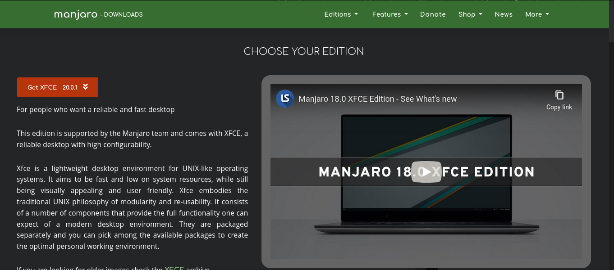
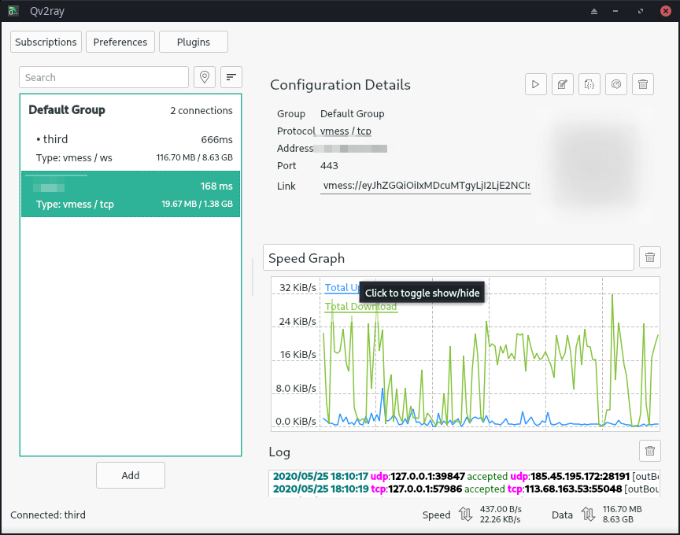
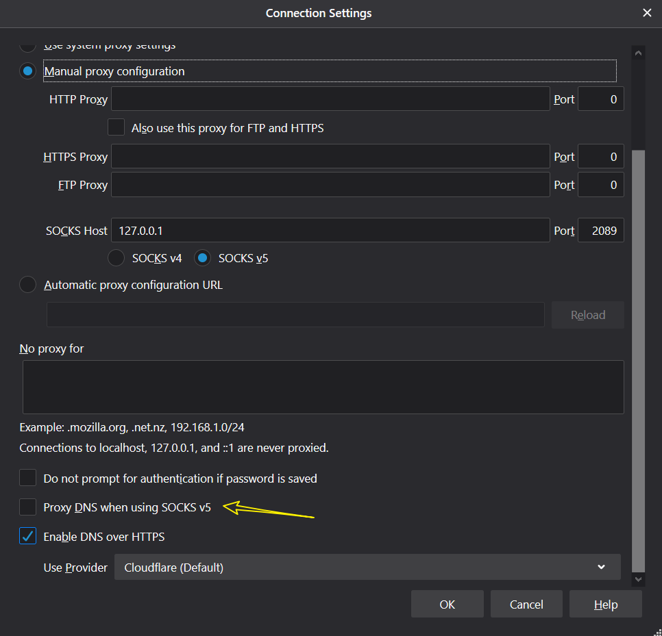
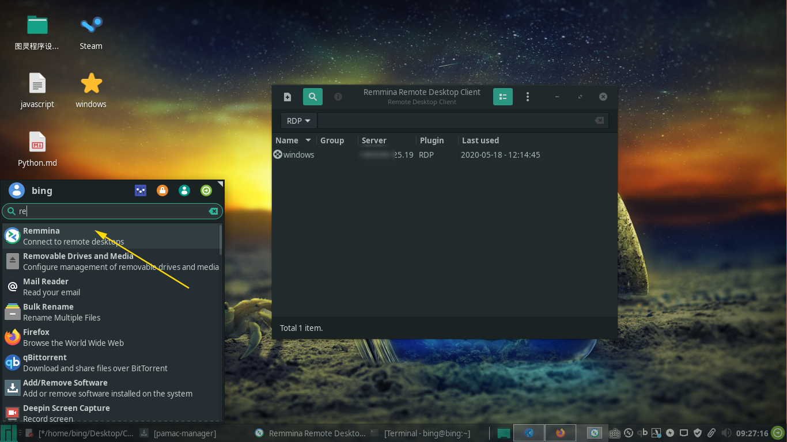
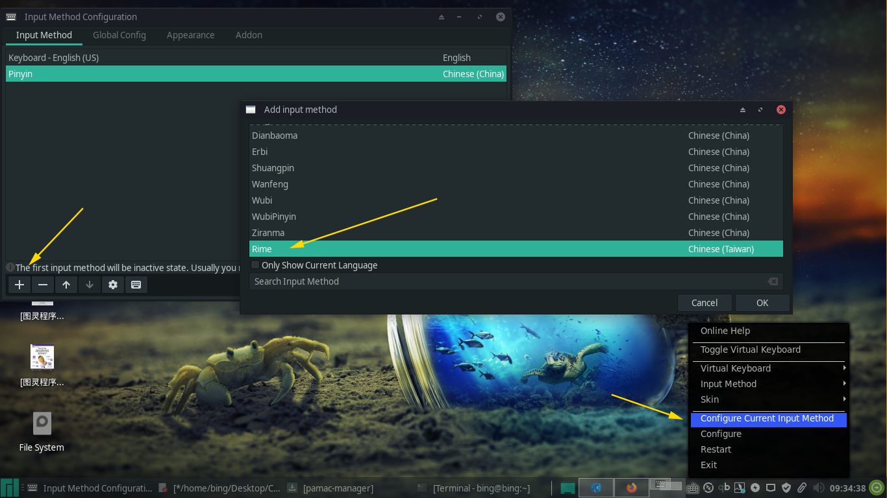
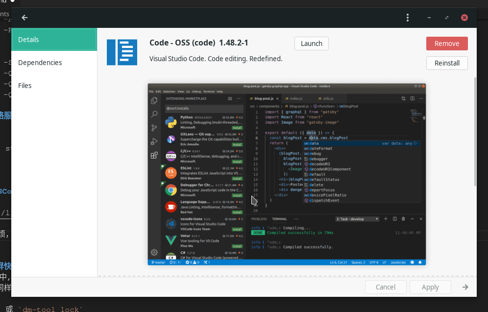
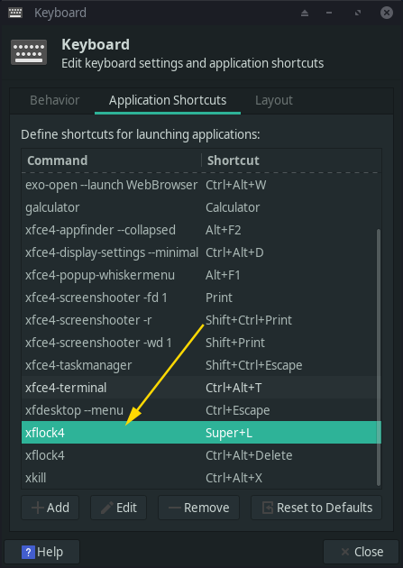

在一年以前就听说了Manjaro，所以现在想用它来替代日常使用的windows系统。实际体验下来，还是不错的。
在以前，我用过 Debian。老实说，体验不是很好。这次下载的是 Manjaro XFCE 桌面版本。我个人不推荐用Gnome，XFCE 是 Manjaro 的旗舰版本，在稳定和外观上不输于 Gnome。

看一下这个桌面，amazing，awesome，wonderful 。。。逃
更新源
安装完系统之后的第一件事，切换为国内源
$ sudo pacman-mirrors -i -c China -m rank升级一下系统
$ sudo pacman -Syyuu然后我们安装一个新的包管理软件
\\安装yay
$ sudo pacman -S yay科学上网
这个是生活必需品，这里我们使用 Qv2ray。这个是一个兼容 Windows 和 Linux 的工具，开发的大佬很积极，有什么问题可以去他们的 Github 主页提 Issue

直接使用 pacman 或 yay 来安装 qv2ray , 可能会面对包找不到或安装速度过慢的问题，这里我们先添加 arch 的软件源可解决这些问题
首先添加 Archlinuxcn软件源，不然很多包是没有的
编辑/etc/pacman.conf文件，在文件的末尾添加以下内容：
[archlinuxcn]
Server = https://mirrors.tuna.tsinghua.edu.cn/archlinuxcn/$arch附社区镜像列表：https://github.com/archlinuxcn/mirrorlist-repo
然后执行如下命令：
sudo pacman -Sy archlinuxcn-keyring haveged
sudo systemctl enable haveged
sudo systemctl start haveged
sudo pacman-key --init
sudo pacman-key --populate manjaro
sudo pacman-key --populate archlinux
sudo pacman-key --populate archlinuxcn之后，开始安装qv2ray：pacman -S qv2ray
然后，安装v2ray核心：sudo pacman -S v2ray
搞定，顺便说下，这个qv2ray是支持trojan协议的，你可以到github下找到补丁安装使用。
如果你安装完Qv2ray,配置什么的没有错误.还是没有办法上网,请检查你的DNS是否被污染…(亲身经历,痛)
解决DNS污染的方法(Firefox):
把 Proxy DNS when using SOCKS v5 选项的勾打上

Windows远程桌面
sudo pacman -Syu remmina freerdp
中文输入法
sudo pacman -S fcitx-rime
sudo pacman -S fcitx-im
sudo pacman -S fcitx-configtool
\\然後編輯一個文件
sudo gedit ~/.xprofile
\\在末尾添加
export GTK_IM_MODULE=fcitx
export QT_IM_MODULE=fcitx
export XMODIFIERS="@im=fcitx"
重啓系統，进入设置

先添加中文输入法，然后
configure > Appearance > Font Size
这里面的设置默认是 0， 简直坑爹，我改成了 13, 才能看到输入框。
pacman 用法
pacman -S [name] 安裝軟件
pacman -Syu 升級系統
➔ pacman -R 包名：该命令将只删除包，保留其全部已经安装的依赖关系
➔ pacman -Rs 包名：在删除包的同时，删除其所有没有被其他已安装软件包使用的依赖关系
➔ pacman -Ss 关键字：在仓库中搜索含关键字的包。
➔ pacman -Qs 关键字： 搜索已安装的包。
➔ pacman -Qi 包名：查看有关包的详尽信息。
➔ pacman -Ql 包名：列出该包的文件。
启动网络服务
systemctl start NetworkManager.service
安装 VSCode
手动安装：
https://linuxhint.com/install_visual_studio_code_arch_linux/
上面的太麻烦，后来才知道，在Manjaro下有个code-OSS

直接在Package Manager里面搜索下载，或者命令行安装pacman -S code
添加锁屏快捷键
在Windows中,我们可以使用 Win + L 来快速锁屏.
Manjaro 同样可以. 我们在键盘快捷键添加如下命令
xflock4 或 dm-tool lock

以管理员启动文件管理器
sudo thunar双系统时间冲突
如果你在同一台机器上安装有 Windows 和 Linux 两个系统,那么你的时间很可能会冲突,具体见下面
sudo ln -sf /usr/share/zoneinfo/Asia/Shanghai /etc/localtime
设置时区的一种方式，注意：/usr/share/zoneinfo/ 这个目录查看时间设置情况：
timedatectl status列出可用的时区：
timedatectl list-timezones设置时区(根据上一步的时区进行设置)：
sudo timedatectl set-timezone Australia/Sydney启动NTP:
首先需要配置一下/etc/systemd/timesyncd.conf，取消#NTP=的注释。然后填上 NTP 服务器的地址以下是苹果的NTP：
NTP=time1.apple.com time2.apple.com time3.apple.com time4.apple.com time5.apple.com time6.apple.com time7.apple.com开启NTP
timedatectl set-ntp true查看时间同步的情况：
timedatectl timesync-status手动设置时间
sudo timedatectl set-time "2013-08-11 23:56:16"
更改锁屏壁纸
sudo lightdm-gtk-greeter-settings
Bugs
“This session is locked”
有时候你离开电脑一段时间，打开屏幕，就会出现下图的情况：
这时，你可以使用 Alt + Ctrl + F6 来调出其他终端窗口，登录你的用户，然后输入下面命令解锁
loginctl list-sessions
列出所有的 sessions，找到对应的 ID
loginctl unlock-session [id]
解锁对应 ID 的 session实际体验
感觉能满足大部分日常需要,毕竟现在基本是一个浏览器走天下.不得不说,Arch的社区驱动做的真好,软件该有的都有了.
Manjaro给我一个很良好的印象就是: 安装系统后就能使用,而不是像Debian那样,还需要去找一些硬件的驱动.
相见恨晚.
参考链接
https://www.jianshu.com/p/ea651cdc5530
https://mrswolf.github.io/zh-cn/2019/05/24/manjaro%E8%B8%A9%E5%9D%91%E8%AE%B0/